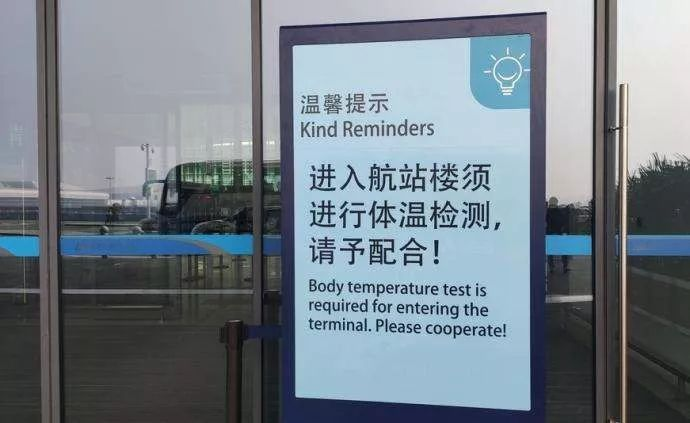
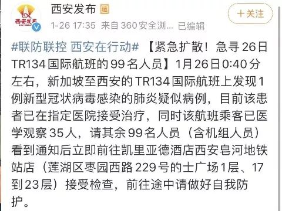
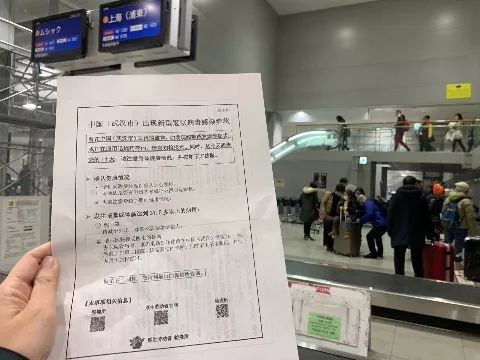

肺炎疫情下的TR188航班全员隔离事件
原文链接 备份链接 摘要：1月26日晚间，杭州官方发布“新型冠状病毒肺炎”最新通报，25日9时至24时，杭州市新增新型冠状病毒感染的肺炎确诊病例15例，其中2名确诊患者正是乘坐TR188次航班抵达杭州萧山机场的乘客。 文 | 殷盛琳 程静 …
28.01.2020

本文字数：2613，阅读时长大约4.5分钟
导读：今日武汉市文化和旅游局也表示，目前尚有4096名武汉游客在境外。
作者 | 第一财经 陈姗姗 权小星
26日晚，湖北省人民政府新闻办公室就新型冠状病毒感染的肺炎疫情防控工作召开新闻发布会，武汉市长周先旺今日表示，因为春节和疫情的影响，目前有500多万人离开武汉，还有900万人留在城里。
根据第一财经此前披露的航班大数据，这500万人中，有不少是飞去国外旅行。今日武汉市文化和旅游局也表示，目前尚有4096名武汉游客在境外。
那么，在国内万众一心应对疫情的同时，其他国家是如何反应的？第一财经记者通过现场采访和权威信息进行了梳理：
| 泰国
泰国是目前国外确诊新型肺炎患者最多的，共4例，这从过去一个月内武汉出港数据也可以关联：12.30-1.22日的武汉航班国际出发数据显示，到泰国曼谷机场的座位数排第一。

目前，由于武汉机场的航班全部取消，不少要返程的武汉游客陷入了有家回不了而15天落地签即将过期的尴尬。
不过，针对落地签即将到期的情况，泰国政府和移民局昨日发布通告，对于中国因新型肺炎疫情关闭个别机场，导致部分要回国却滞留泰国的中国游客，将实行免除预期滞留的的罚款，申请延长停留时间。
泰国方面强调，此通告仅限湖北省内的武汉，黄冈等城市。
| 新加坡
新加坡也是武汉人出港国外的主要目的地之一，从武汉出港到新加坡的座位数排在泰国曼谷之后的第二位，目前新加坡已确诊三例患者。
目前，已有在新加坡结束旅游的武汉乘客，改签到其他航班回国，落地湖北省外城市。
比如新加坡酷航就于25日发表声明，称由于飞往武汉的航班取消，酷航提供了全额退款和稍后改签回其他城市的选择，最终为116名武汉旅客改签到TR188次航班飞往杭州。
24日10时，TR188从新加坡达到杭州萧山机场，但这一航班上除了有116名武汉客人，还有219名其他城市的客人。根据杭州市防控指挥部的疫情通报，由于事先掌握信息，飞机着陆后，2名发烧人员第一时间被送至萧山区第一人民医院，其余武汉乘客在机场宾馆就地隔离，而219名其他乘客也被留在市委党校集中医学观察。
另据记者了解，1月26日0点40分左右，新加坡到西安的TR134航班上又发现一例新型肺炎疑似病例，目前该患者已在指定医院接受治疗，同时该航班乘客也已医学观察35人，其余99名人员（含机组人员）还在征集要求前往指定酒店接受检查。

| 日本
武汉出港目的地座位数排第三的是日本成田机场，目前日本也确认了三例患者，其中第一位确诊者已经痊愈出院，后两位仍在东京的医院接受治疗。
日本首相安倍晋三在1月27日上午召开的众议院预算会议上确定，日本内阁将在28日的会议上将新型肺炎纳入“指定传染病”，这意味着日本政府可对患者采取劝告、强制住院治疗、限制就业等措施。而在日本境内一旦被强制入院，不分国籍，所有治疗费将由政府承担。
在日本国内，日本外务省已经发出“2级感染症危险情报”，要求日本国民除紧急情况外，不要前往武汉市和湖北省，同时要求所有在中国的日本人，到驻中国各地的使领馆登记个人资料，以备感染后能够在第一时间得到帮助。
从23日开始，日本停飞了所有飞往武汉的航班，日本各大企业则取消了员工前往武汉与湖北出差计划。
此外，日本政府还启动了紧急防疫机制，在各大机场附近指定重大传染病救治医院，配备专用的仪器设备，机场防疫机构也进行了发现感染者后的移送训练。
第一财经记者在日本关西机场也看到，机场入境时有红外线体温检测仪，并给每一位入境的中国人一份“健康咨询通知”，如有问题可以到相关保健所咨询。

值得注意的是，到目前为止，日本政府并没有限制武汉游客进入日本，而是在中国游客较为集中的酒店，餐厅，百货公司门口，摆上免费的消毒液，供游客洗手消毒。
第一财经记者在一些日本的药妆店也看到，有防毒作用的口罩已经所剩无几，但店员仍会主动介绍每一种口罩的功效和价格不同的原因，前几天有些日本店还对口罩进行了降价，并写上“中国加油”的字样，不过，这几天不少日本的药妆店也开始对游客购买口罩限购，原因是“库存告急”。
更有日本民间企业，捐助了100万只防疫口罩给中国，目前这批口罩已通过川航的“东京-成都”航班达到成都，再通过汽运驰援武汉。
| 韩国
韩国也是武汉封城前武汉出港境外的主要目的地之一，目前有两例新型肺炎确诊。
26日，韩国疾病管理本部宣布，韩国确诊第四例新型冠状病毒肺炎病例，并宣布将加强检疫，要求填写健康问卷的范围从来自武汉的旅客，扩大至来自中国全境的旅客。
第一财经记者与韩国疾病管理本部（类似于我国疾控中心）取得联系，对方表示，暂时没有将武汉籍旅客遣返，或禁止入境的计划，但表示目前在韩国机场，针对所有来自中国的游客需要填写健康问卷，并进行两次体温测量，此外，机场消毒次数则增至平时的两倍，扶梯、公共电话、饮水台等公用设施每日消毒两次。
该负责人进一步表示，通过与移民部门的配合，已经将所有从武汉入境的人员信息传送至韩国医疗管理系统，该批人员前往医院就医时，医院系统会立刻提示该人群来自或中转武汉地区，并只要存在新型肺炎可能出现的任何一个症状，就应当立刻报备至疾控中心进行管理。
值得注意的是，虽然韩国方面表态目前还没有对中国游客加以限制的计划，但韩国驻武汉总领事馆已经表示，受到撤侨等其他业务压力的影响，将停止接受签证业务，而韩国大韩医师协会也发表声明，要求政府对所有从中国入境的旅客应当进行全面的调查、跟踪及管理，并敦促政府应当停止社区卫生中心的普通业务，转而全面对应新型肺炎。
27日，韩国总统文在寅又指示，要求疾控机构联合移民机构，针对疫情爆发后所有从武汉地区入境的100余名游客进行病毒检查，并在检查结果更新前要求自行隔离。
根据韩国首尔市政府的初步统计数据显示，目前在韩的中国游客中，有70%为非旅游团的个人游客，这也为游客的管理方面赋予巨大挑战。
第一财经记者联系到一位仍在韩国旅行的武汉籍游客孙小姐，她对记者表示，目前她来的时候乘坐的大韩航空公司航班已经停航，并接到大韩航空方面的联系，表示可以更改至中国境内任意目的地，且只要支付差价即可，同时也可以选择免费退票。
“此外，我所在的酒店当得知我来自武汉以后，也请求能够尽快离开，并向疾控中心进行报备。”孙小姐表示，她目前已经计划提前离开韩国，并前往提供定点住宿地点的城市，以等待进一步信息。
综合携程旅行网、航司官网及韩国首尔仁川机场公社的信息显示，目前武汉-首尔航线由南方航空及大韩航空两家运营，且均发布了针对武汉航线的停航及更改计划，大韩航空及韩亚航空等韩国航司均推出针对1月20日至2月29日，出发或到达中国航线推出特殊退票措施，而韩国乐天、新罗等本土各大连锁酒店也推出特殊退改措施，允许中国籍游客免费更改或取消预订。
【推荐阅读】
UP主实拍：“空城”武汉的物价、交通 、生活状态


原文链接 备份链接 摘要：1月26日晚间，杭州官方发布“新型冠状病毒肺炎”最新通报，25日9时至24时，杭州市新增新型冠状病毒感染的肺炎确诊病例15例，其中2名确诊患者正是乘坐TR188次航班抵达杭州萧山机场的乘客。 文 | 殷盛琳 程静 …
原文链接 备份链接 关注并星标消费新声 不错过泛消费任何最新动态 尤其在近十年，尽管国际形势时有起落，但两国的经济和民间交流正在不可逆地粘连到一起，相似的传统文化背景让我们之间形成对照，成为几乎不可能被斩断的近邻。 作者 | …
原文链接 备份链接 *************▲************* 在这间宽敞的隔离病房，我独自一人过年。 （林和黄供图/图） 全文共*4830*字，阅读大约需要10分钟。 一位医务人员拿出两根约20厘米长的棉签，往我鼻孔里沾取 …
原文链接 备份链接 图片来源：世卫组织网站 文 | 周航 李晓芳 王彦入 殷盛琳 编辑 | 王珊 这原本应该是趟完美的旅行。 武汉出发，成都集合，沿着318国道，一路往西，大年初一抵达拉萨——在布达拉宫瑰丽光彩的映照下，度过庚子新年的第一 …
原文链接 备份链接 KOBE BRYANT 1978-2020 R.I.P. 2020年1月27日。 农历正月初三。 武汉封城第五天。 天门封城第四天。 天真冷啊。虽然疫区今天终于见到了久违的阳光。 可也传来了晴天霹雳的消息：科比坠机罹 …